モデルのソルバー ヤコビ行列構造の探索
このデモの目的は、Simulink® を使用してソルバーのヤコビ行列のスパース パターンと、ソルバーのヤコビ行列のスパース パターンおよび物理システムのコンポーネント間の依存関係の間のつながりを探索する方法を示すことです。自由移動ベースに配置された 3 つのメトロノームの同期をモデル化する Simulink モデルが使用されます。
目次
ソルバーのヤコビ行列パターン
一般的に、Simulink モデルの連続部分は次のように記述できます。
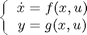
ここで、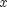 は連続状態で、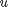 は入力です。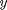 は出力です。
次の行列:
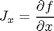
は、システム ソルバーのヤコビ行列と呼ばれます。暗黙的な ODE ソルバーを使用してシステム方程式を解く場合は、必要に応じて  を計算する必要があります。たとえば、次の一連の 1 次 ODE のヤコビ行列
を計算する必要があります。たとえば、次の一連の 1 次 ODE のヤコビ行列
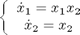
は次のようになります。
![$$
J_x = \left[ {\begin{array}{*{20}c}
{\frac{{\partial f_1 }}{{\partial x_1 }}} & {\frac{{\partial f_1 }}{{\partial x_2 }}} \\
{\frac{{\partial f_2 }}{{\partial x_1 }}} & {\frac{{\partial f_2 }}{{\partial x_2 }}} \\
\end{array}} \right] = \left[ {\begin{array}{*{20}c}
{x_2 } & {x_1 } \\
0 & 1 \\
\end{array}} \right]
$$](../sldemo_metro_eq73719.png)
ソルバーのヤコビ行列は、ゼロ以外の各要素を 1 として表し、常にゼロ (ハード ゼロ) である各要素を 0 として表すことで、Boolean スパース行列に変換できます。 たとえば、上記のヤコビ行列 に対応する Boolean 行列は次のようになります。
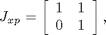
ここで、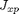 はソルバーのヤコビ パターン行列と呼ばれます。
ソルバーのヤコビ パターン行列は、次のルールを使用することで、元のシステム方程式から直接生成できます。
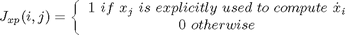
ここに示すように、ソルバーのヤコビ パターン行列は、実際には状態変数とその導関数間の依存関係を表します。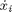 の計算に 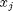 の値が必要な場合は、依存関係 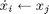 と 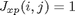 が存在します。これらの依存関係は、システムの物理性によって決定されるため、ソルバーのヤコビ行列を調べると、モデルが表す物理システムの物理的な構造を探索できます。Simulink には、ユーザーがソルバーのヤコビ パターン行列を取得するための API が用意されています。以下では、ソルバーのヤコビ行列パターンにアクセスし、それを使用してモデルを調査する方法を示します。
パターンと依存関係: メトロノームの同期
同期は、弱い相互作用によって生じた振動オブジェクトのリズムの乱れを調整するものとして定義されています [1]。同期に関して文書に記録された初期の科学的観察の 1 つは、振り子時計を発明したオランダ人科学者、クリスチャン・ホイヘンスによって報告されています [2]。ホイヘンスは、椅子で支えられている 1 つの柱に取り付けられた 2 つの振り子が、ある程度の時間を経過すると、互いに正反対の方向に揺れることを発見しました。図 1 は、このデモで使用した類似の装置を示しています。

図 1: このデモで使用した装置: 移動ベース上の 3 つのメトロノーム
システムのモデル化
この物理システムのモデルは、次の 2 つの部分に分割できます。
- メトロノーム メカニズム
- 移動ベース
メトロノーム メカニズム
図 1 に示す、移動ベース上の 1 つのメトロノームの動的な式は、次のように導出できます [3]。
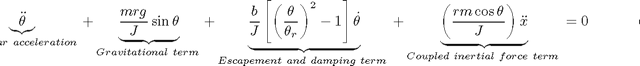
最初の 2 つの項は、摩擦のない単純な振り子を記述しています。3 番目の項は、メトロノームのエスケープメント* および減衰を近似するために使用されます。この項は、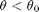 に対して角速度を増加させ、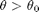 に対して減少させます [3]。最後の項は、移動ベースからの干渉の影響を慣性力で表したものです。
移動ベース
ベースの動きに摩擦がないものと仮定すると、システムの重心は変化しないので、以下を導出できます。
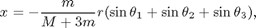
ここで、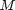 はベースの重心で、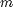 は振り子の重心です。
式 1 は次のように変更できます。
![$$
\ddot x = - \frac{m}{{M + 3m}}r\left[ {\ddot \theta _1 \cos \theta _1 -
\sin \theta _1 (\dot \theta _1 )^2 + \ddot \theta _2 \cos \theta _2 -
\sin \theta _2 (\dot \theta _2 )^2 + \ddot \theta _3 \cos \theta _3 -
\sin \theta _3 (\dot \theta _3 )^2 } \right]~~~~~~~~~~(eq.2)
$$](../sldemo_metro_eq77682.png)
以下は、Simulink を使用して実装された上記のシステムを示しています。モデルは 3 つのメトロノーム サブシステムと 1 つの移動ベースを含んでいます。
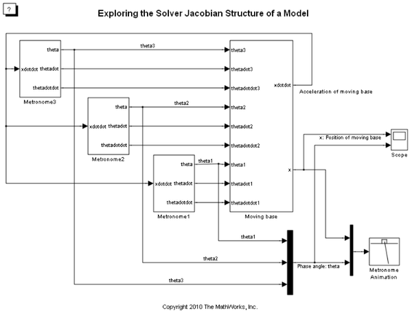図 2: メトロノーム システムの Simulink モデル
このシステムのシミュレーションは、興味深い現象である、同期を示しています。つまり、異なる初期位相角度を持つ 3 つのメトロノームがすべて結果的に互いに同期することが示されています。図 3 は、シミュレーション結果を示しています。同期の主な原因は、これらすべてのメトロノームを結合している移動ベースにあります。この物理的な接続は、各メトロノームの動的な式から観察できます。
また、このモデルのソルバーのヤコビ行列パターンからも観察できます。以下の MATLAB® コードは、ソルバーのヤコビ行列パターンを取得する方法を示します。
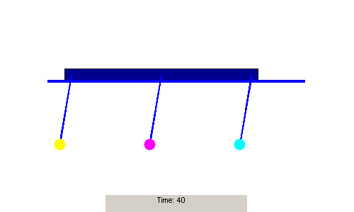 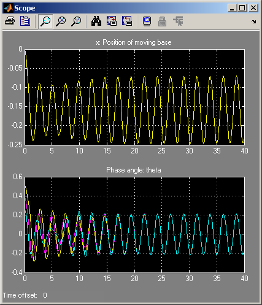図 3: 同期しているメトロノーム
ソルバーのヤコビ行列パターンを取得する手順
% 1. Set the solver to be any implicit solver
set_param(mdl, 'Solver', 'ode15s');
% 2. Set the solver Jacobian method to be Sparse perturbation *
set_param(mdl, 'SolverJacobianMethodControl', 'SparsePerturbation');
% 3. Get the solver Jacobian MCOS object.
J = Simulink.Solver.getSlvrJacobianPattern(mdl);
disp('J = ');
disp(J);% 4. Show the pattern in a figure. use the method J.show
J.show;
% 5. Explore the pattern with the given state name and other information
stateNames = J.stateNames;
disp('stateNames = ');
disp(stateNames);結果は次のように表示されます。
J =
Simulink.Solver.SlvrJacobianPattern
Package: Simulink.Solver
Properties:
Jpattern: [8x8 double]
numColGroup: 6
colGroup: [8x1 double]
stateNames: {8x1 cell}
blockHandles: [8x1 double]
stateNames =
'Baseposition'
'Theta1'
'Theta2'
'Theta3'
'Thetadot3'
'Thetadot2'
'Thetadot1'
'Basespeed'
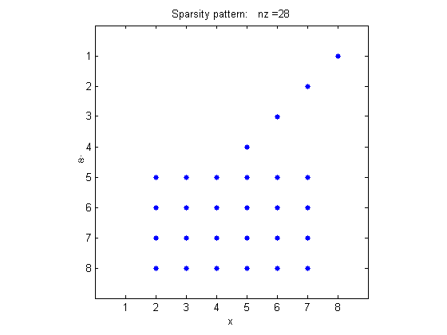 図 4: ソルバーのヤコビ行列パターン
ソルバーのヤコビ行列パターン オブジェクトのプロパティ
ソルバーのヤコビ行列パターン J は、MCOS オブジェクトです。このオブジェクトには、以下のプロパティが含まれています。
Jpattern: ヤコビ行列パターンであるスパースの mxArray。
numColGroup: 列グループの数。
colgroup: スパース パターン行列の列パーティション。
stateNames: 各状態の状態名を含むセル配列。
blockHandles: 各状態のオーナーのブロック ハンドル。
ソルバーのヤコビ行列パターンの調査
図 4 を見ると、まず、このモデルのソルバーのヤコビ行列がスパースであり、ゼロ以外の要素の数が 28 であることがわかります。次に、列グループの数は 6 で、これは状態の数 8 よりも少ないことがわかります。
1 ～ 4 行目は、以下の依存関係を示しています。
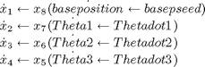
速度は位置の導関数であるため、これらの関係は明らかです。5 ～ 8 行目は、以下の関係を示しています。
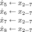
これらの関係は、メトロノームの角加速度または移動ベースの加速度を計算するには、メトロノームの角位置と角速度が必要ですが、ベースの位置と速度は不要であることを示しています。これらの関係は、式 (1) と式 (2) を直接調べることで見つけることができます。
まとめ
ソルバーのヤコビ行列パターンは、状態変数の導関数と状態変数間のデータ依存関係を調べるためのツールです。これらの関係は、通常は物理システム内の特定の物理結合を反映しています。提供されたツールを使用すると、物理モデルの元の動的な式を使用しなくても、Simulink モデルに関連付けられているこれらの関係を発見できます。
参照
[1] Arkady Pikosvky, Michael Rosenblum, and Jurgen Kurths. Synchronization. Cambridge University Press, 2001.
[2] Ward T. Oud, Design and experimental results of synchronizing metronomes, inspired by Christiaan Huygens, Master Thesis, Eindhoven University of Technology, 2006.
[3] Pantaleone, James, American Journal of Physics, Volume 70, Issue 10, pp.992-1000, 2002.
- エスケープメントとは、メトロノームを駆動する一連のメカニズムです。詳細は、[2] を参照してください。